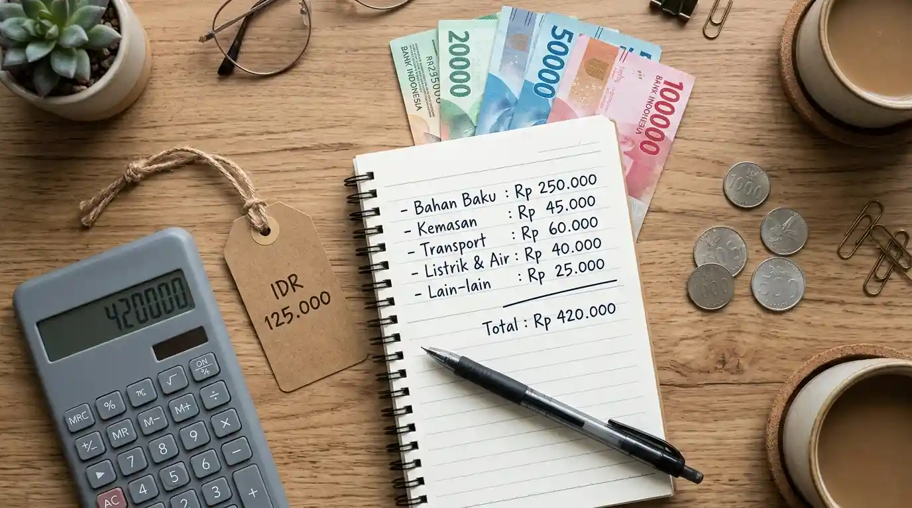

Edukasi & Tips Usaha Warga
Kumpulan panduan praktis untuk membantu warung dan UMKM lokal makin berkembang pesat.
 9 min
9 min
5 Trik Jualan Laris via WhatsApp untuk Warung Rumahan
Cara menggunakan fitur katalog WhatsApp Business, pemanfaatan label, dan broadcast promo santun ke tetangga sekitar.
 10 min
10 min
Cara Foto Makanan & Produk Pakai HP Tanpa Alat Mahal
Pencahayaan alami jendela, sudut 45 derajat, dan trik reflektor sederhana yang bikin menu makanan jualanmu makin menggugah selera.
 11 min
11 min
Panduan Pembukuan Sederhana Usaha Kecil Rumahan
Pisahkan uang belanja pribadi dan modal usaha, format buku kas 4 kolom, serta aturan gaji sendiri agar arus kas warung tetap sehat.
 10 min
10 min
Cara Daftarkan Toko ke Google Maps Agar Mudah Ditemukan Pembeli
Langkah praktis registrasi titik lokasi, verifikasi Google Bisnis Profil, dan tips mendatangkan pembeli sekitar lewat ulasan bintang 5.

10 minStrategi Menentukan Harga Jual Produk agar Tidak Boncos
Cara menghitung HPP, biaya tersembunyi (gas, kemasan, tenaga), dan menentukan margin laba 40% tanpa terjebak perang harga rugi.
 10 min
10 min
Tips Bikin Kemasan Menarik dengan Modal Hemat untuk UMKM
Manfaatkan kertas kraft cokelat, stiker logo lembaran, segel higienis, dan kartu ucapan terima kasih yang membuat kemasan tampak premium.
Menampilkan 1 - 3 dari 6 artikel edukasi